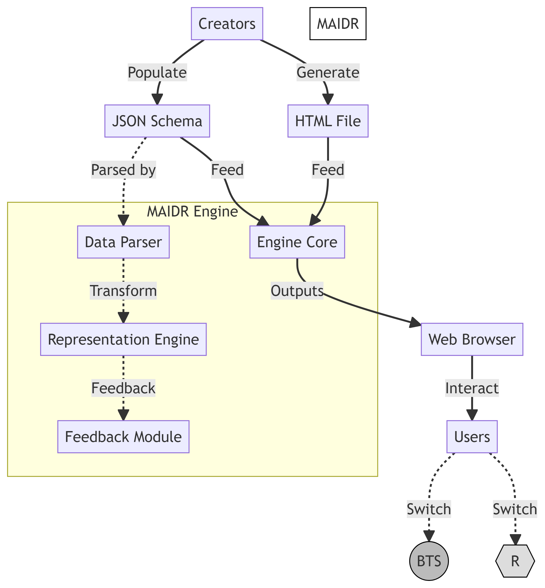

Unseen Insights:
Empowering Autonomous Data Science and Visualization by, with, and for Blind People
School of Information Sciences
University of Illinois at Urbana-Champaign
About Me
Intercultural
Intervisual
Interdisciplinary
About Me
Information and learning scientist
Director: (x)Ability Design Lab
(x)Ability Design?
- == experience variable:
(use)ability: UX
(learn)ability: LX
(access)ability: AX
- (use + learn)ability = UX + LX + AX
∴ Accessibility == (dis)Ability
Ongoing Projects
Accessible maker education (coding and electronics): IMLS #LG-252360-OLS-22, PI
Accessible and reproducible data visualization: IMLS early career #RE-254891-OLS-23, PI
Accessible high-performance computing: NSF #2005572, Senior personnel
Data science education for BLV professionals: NIDILRR #90REGE0018-01-00, Subaward PI
Personalized and conversational health agent: UIUC internal CHAD grant, Co-PI
A Picture is Worth a Thousand Words!
Knowledge is Power
We are All Data Scientists
Data is everywhere
Data is for everyone
Decision making is everyone’s job
How Is Data Represented?
Information Gap
- Only 14% of top Google search results visualizations is accessible (Fan et al., 2023).
Information Gap
Among 144 visualization practitioners (Joyner et al., 2022):
38%: “My” visualizations are typically not accessible.
23%: “I do not know how accessible my visualizations are.”
What if…
Making Data:
- Visible?
- Audible?
- Talkable?
- Touchable?
MAIDR

MAIDR
- iSchool (x)Ability Design Lab with:
- NCSA + Posit + DCN + NFB + C2M
- Funding: Wallace Foundation Teach Access + IMLS
- Until July 2026
Design Process
Interdependent co-design within mixed-ability team (since June 2022)
Usability studies: 11 blind participants (Jan-May 2023)
-> CHI24 (Seo et al., forthcoming): https://bit.ly/maidr-use
Learnability studies: 9 blind participants (Aug 2023)
-> EuroVis24 (Seo et al., under-review): https://bit.ly/maidr-learn
Verbal vs. Non-Verbal Channel
Theoretical Background
BTS+R Modalities
| Verbal Channel | Non-Verbal Channel | |
|---|---|---|
| Tactile Representation | R+: Review (literary braille for data values and labels) | B*: braille (haptic dot patterns representing graphical shapes and trends) |
| Sound Representation | T*: Text (spoken data values and labels via speech synthesizers) | S*: Sonification (non-speech, spatial sounds for illustrating data patterns, shapes, and trends) |
System Implementation

Creation
JSON Schema
MAIDR Demo
oa
Usability Study
Participants
| PID | Braille Device Name | Gender | Age | Education | Major | Self-Reported Visualization Knowledge | Screen Reader | |||
|---|---|---|---|---|---|---|---|---|---|---|
| 7-10 | Bar plot | Heat map | Box plot | Scatter plot | ||||||
| P01 | Mantis Q40 | Non-Binary | 27 | Master | Journalism | 1 | 1 | 1 | 1 | NVDA |
| P02 | Active Braille 40 | Female | 45 | Master | Education | 1 | 0 | 1 | 1 | JAWS |
| P03 | Brailliant BI 40X | Male | 35 | PhD | Applied Statistics | 1 | 1 | 1 | 1 | JAWS |
| P04 | Orbit reader 40 | Female | 18 | High School | Not Applicable | 1 | 0 | 1 | 1 | JAWS |
| P05 | PAC Mate 20 | Female | 57 | Bachelor | Sociology and English | 1 | 1 | 0 | 1 | JAWS |
| P06 | Mantis Q40 | Female | 57 | PhD | Computer Based Music Theory | 1 | 0 | 1 | 1 | NVDA |
| P08 | BrailleNote Touch Plus 32 | Male | 22 | High School | Not Applicable | 1 | 0 | 1 | 1 | JAWS |
| P09 | Braille EDGE 40 | Non-Binary | 25 | Bachelor | Communication and Spanish | 1 | 0 | 1 | 1 | NVDA |
| P10 | Focus 40 | Female | 48 | PhD | Anthropology | 1 | 0 | 1 | 1 | JAWS |
| P11 | Brailliant BI 32 | Male | 33 | Master | Electrical and Computer Engineering | 1 | 1 | 0 | 1 | Orca |
| P12 | HIMS QBraille XL 40 | Female | 26 | PhD | Cognitive Neural Science | 1 | 0 | 1 | 1 | JAWS |
Participants
- Participant Demographics:
- Average age: 35.73 years (Range: 18-57, SD = 13.92)
- Ethnicity: 8 White, 2 Asian, 1 African American
- Gender: 6 Females, 3 Males, 2 Non-binary
- Academic Backgrounds: Includes Statistics, Journalism, Special Education, Computer-Based Music Theory, Symbolic Systems, Electrical Engineering
- Education Level: From high school graduates to PhD holders
Participants
- Visual Impairments:
- Majority blind since birth due to genetic diseases
- Three participants developed visual impairments after age 10 (1 due to a brain tumor, 2 from retinal detachment)
- Braille and Technology Use:
- Average age to start learning Braille: 7.77 years (Range: 4-16, SD = 4.45)
- Braille Education: 7 in public schools, 4 in specialized institutions
- Preferred Screen Readers and OS: 7 use JAWS with Windows, 3 use NVDA on Windows, 1 uses Orca on Linux
Usability Study Results
System Usability Scale (SUS)
Average SUS Scores by Visualization Type:
- Bar Plots: 81.36 (SD = 17.00)
- Heat Maps: 75.5 (SD = 18.36)
- Box Plots: 74 (SD = 17.37)
- Scatter Plots: 70.25 (SD = 21.49)
Key Insights
Correlation between usability and the inherent complexity of each visualization
Variance in learnability across different visualizations
Qualitative Results
- Different strategies:
Whole-to-part vs. part-to-whole
- Influences of Individual Skills and experiences
Quotes
P03, a blind statistician:
“Many thanks once again for showing me your system, it was a really great experience and I can’t wait to use it in my everyday work. I really think it’s a game changer for blind people in statistics and the sciences more widely.”
Learnability Study Results
| Chart Type | Tasks | Median Scores | p | Z | IQR | |
|---|---|---|---|---|---|---|
| Bar Plot | Creation | increased from 2 to 5* | 0.016 | 0.0 | remained at 1 | |
| Heatmap | Creation | increased from 1 to 3 | 0.088 | 6.0 | decreased from 2 to 1 | |
| Box Plot | Creation | increased from 1 to 4* | 0.016 | 0.0 | increased from 1 to 2 | |
| Scatter Plot | Creation | increased from 2 to 4* | 0.017 | 0.0 | remained at 1 | |
| Bar Plot | Interpretation | remained at 5 | 0.317 | 0.0 | remained at 0 | |
| Heatmap | Interpretation | increased from 2 to 3 | 0.221 | 3.0 | increased from 1 to 2 | |
| Box Plot | Interpretation | increased from 3 to 5* | 0.017 | 0.0 | increased from 0 to 1 | |
| Scatter Plot | Interpretation | remained at 4 | 0.414 | 1.5 | remained at 2 |
Future Directions
AI/LLM integration
Personalization
Auto generation in the context of reproducible data science